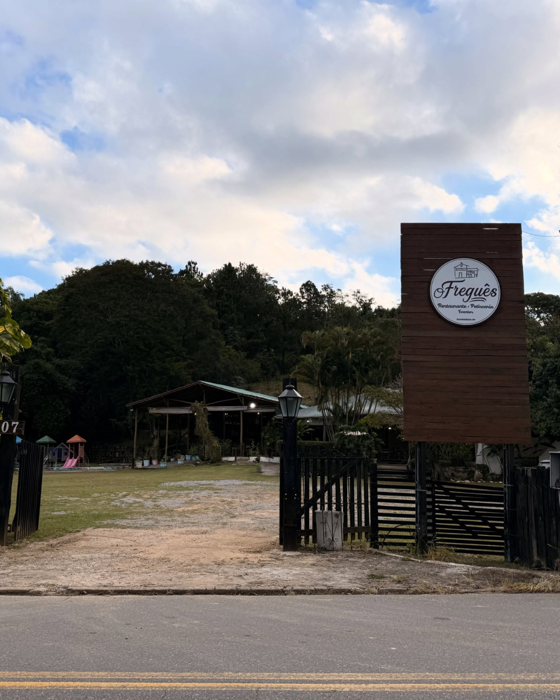
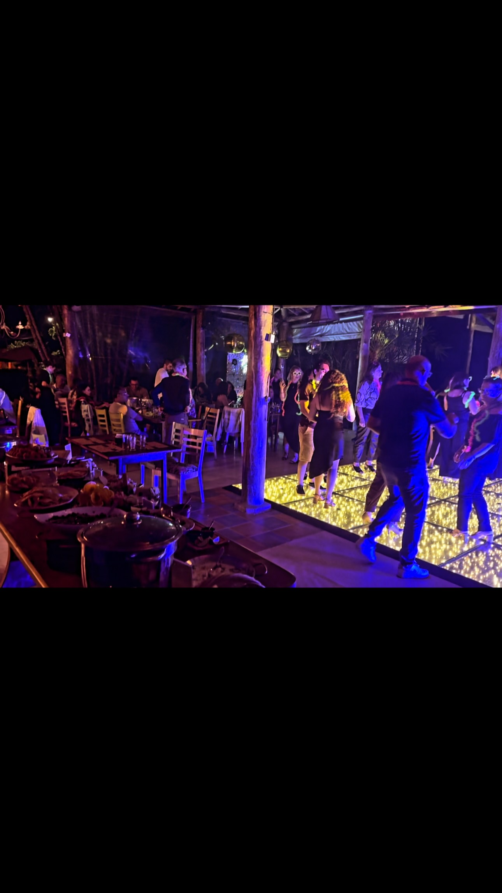
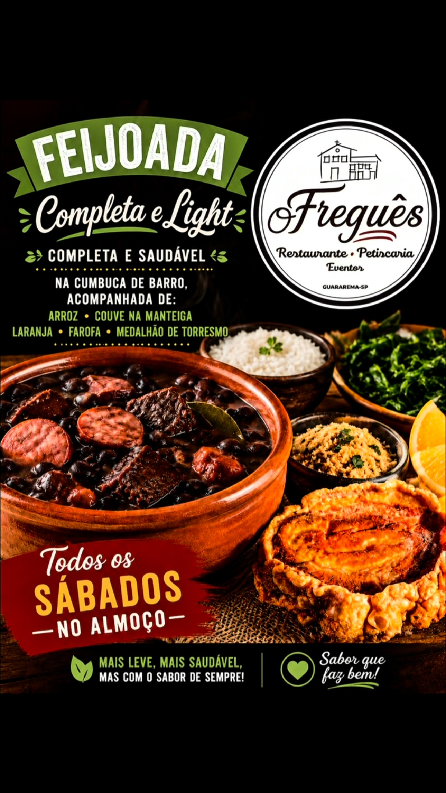

Parmegiana · destaque
À moda da casa
As parmegianas aparecem entre os pratos em destaque do perfil. Escolha de sabores e acompanhamentos a confirmar com a equipe.
Disponibilidade e tamanho sob consultaConsultar ↗
Pratos para compartilhar, parmegiana, petiscos e espaço para aproveitar Guararema sem pressa. Descubra a casa, consulte o cardápio e planeje sua visita.


O Freguês reúne restaurante, petiscaria e espaço para encontros. A experiência começa antes de sair de casa: saber o que encontrar, onde fica e como falar com a equipe ajuda cada pessoa a chegar com mais contexto.
O perfil divulga rodízio de parmegiana às sextas. Confira horário, valor e disponibilidade atual antes de sair.

A publicação apresenta feijoada completa e light aos sábados. A equipe confirma o serviço e os detalhes do dia.
Veja a localização no mapa e abra a rota no Google Maps. Endereço publicado pela Prefeitura de Guararema e pelo restaurante.
Confirme o horário de funcionamento e disponibilidade diretamente com a equipe antes de visitar.
Abrir rota no Maps ↗